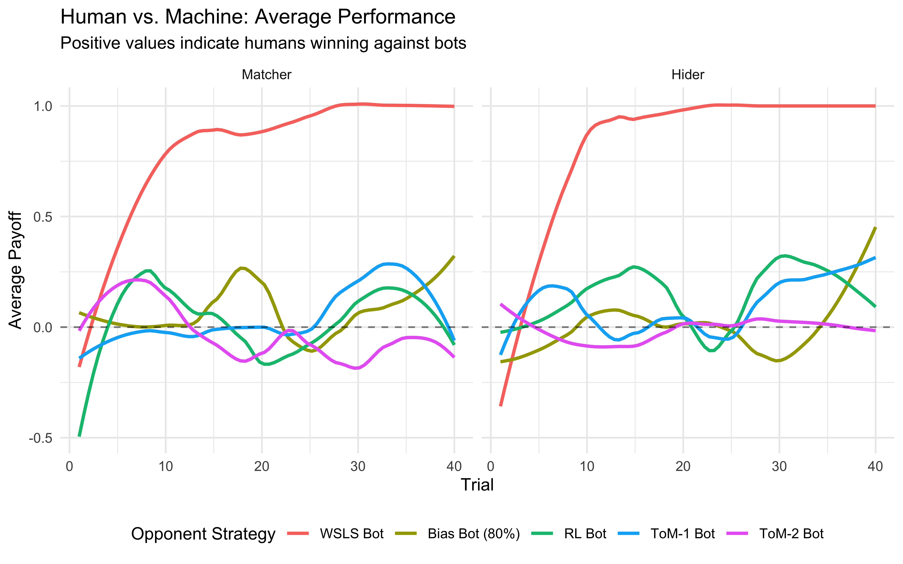

Chapter 3 Building Models of Strategic Decision-Making
You’ve just played Matching Pennies and discussed strategies with your classmates. You probably noticed patterns in your opponent’s play, tried to be unpredictable, and maybe even changed your strategy mid-game. This chapter helps you translate those observations and intuitions into the language of cognitive modeling—preparing you to implement formal models in Chapter 3.
3.1 Learning Goals
This chapter bridges the gap between observing behavior and developing testable theories. By the end of this chapter, using the Matching Pennies game as a case study, you will be able to:
- Identify Key Modeling Steps: Understand the process of moving from behavioral observations and participant reflections to formulating initial verbal theories of underlying cognitive strategies.
- Appreciate Theory Building Challenges: Recognize common issues in theory development, such as the participant vs. researcher perspective, the need for simplification, and incorporating known cognitive constraints.
- Generate Candidate Models: Propose several distinct verbal models (e.g., random choice, simple heuristics, memory-based strategies) that could plausibly explain behavior in a strategic decision-making task.
- Connect to Formalization: Understand why translating these verbal models into precise, formal models (covered in the next chapter) is a necessary step for rigorous testing and simulation.
3.2 Introduction: Observing Behavior to Theorize Mechanisms
Chapter 1 emphasized the importance of modeling underlying generative mechanisms. To do this for cognition, we first need a behavior to explain. This chapter uses the Matching Pennies game as our initial cognitive phenomenon. It’s a simple strategic interaction, yet rich enough to illustrate the process of developing and refining cognitive models.
Our goal here is not yet to build the final computational models, but to practice the crucial preceding steps: 1. Observing behavior in a specific task (through experiments and data exploration). 2. Reflecting on potential cognitive strategies and constraints (drawing on observations, participant reports, and cognitive science principles). 3. Formulating initial verbal theories or candidate models that describe the potential underlying mechanisms.
This process lays the groundwork for Chapter 3, where we will translate these verbal ideas into precise, formal models ready for simulation and testing.
3.3 The Matching Pennies Game
In the matching pennies game, two players engage in a series of choices. One player attempts to match the other’s choice, while the other player aims to achieve a mismatch, and they repeatedly play with each other. This is a prototypical example of interacting behaviors that are usually tackled by game theory, and bring up issues of theory of mind and recursivity.
For an introduction see the paper: Waade, Peter T., et al. “Introducing tomsup: Theory of mind simulations using Python.” Behavior Research Methods 55.5 (2023): 2197-2231.
3.4 Game Structure
The game proceeds as follows:
- Two players sit facing each other
- Each round, both players choose either “left” or “right” to indicate where they believe a penny is hidden
- The matcher wins by choosing the same hand as their opponent
- The hider wins by choosing the opposite hand
- Points are awarded: +1 for winning, -1 for losing
- Repeat
This simple structure creates a rich environment for studying decision-making strategies, learning, and adaptation.
3.5 Empirical Investigation
3.5.1 Data Collection Protocol
If you are attending my class you have been (or will be) asked to participate in a matching pennies game. This game provides the foundation for our modeling efforts. By observing gameplay and collecting data, we can develop models that capture the cognitive processes underlying decision-making in strategic situations.
Participants play 30 rounds as the matcher and 30 rounds as the hider, allowing us to observe behavior in both roles. While playing, participants track their scores, which can provide quantitative data for later analysis. Participants are also asked to reflect on their strategies and the strategies they believe their opponents are using, as that provides valuable materials to build models on.
3.5.2 Initial Observations
Through the careful observation and discussion of gameplay we do in class, several patterns typically emerge. For instance, players often demonstrate strategic adaptation, adjusting their choices based on their opponent’s previous moves. They may attempt to identify patterns in their opponent’s behavior while trying to make their own choices less predictable. The tension between exploitation of perceived patterns and maintenance of unpredictability creates fascinating dynamics for modeling.
3.6 Empirical explorations
Below you can observe how a previous year of CogSci did against bots (computational agents) playing according to different strategies. Look at the plots below, where the x axes indicate trial, the y axes how many points the CogSci’ers scored (0 being chance, negative means being completely owned by the bots, positive owning the bot) and the different colors indicate different strategies employed by the bots. Strategy “-2” was a Win-Stay-Lose-Shift bot: when it got a +1, it repeated its previous move (e.g. right if it had just played right), otherwise it would perform the opposite move (e.g. left if it had just played right). Strategy “-1” was a biased Nash both, playing “right” 80% of the time. Strategy “0” indicates a reinforcement learning bot; “1” a bot assuming you were playing according to a reinforcement learning strategy and trying to infer your learning and temperature parameters; “2” a bot assuming you were following strategy “1” and trying to accordingly infer your parameters.
library(tidyverse)
# --- 1. Data Loading / Generation ---
data_path <- file.path("data", "MP_MSc_CogSci22.csv")
if (file.exists(data_path)) {
d <- read_csv(data_path)
} else {
# Generate synthetic data if file is missing (Reproducibility check)
set.seed(42)
n_students <- 20
n_trials <- 30
strategies <- c(-2, -1, 0, 1, 2)
d <- expand_grid(
ID = factor(1:n_students),
BotStrategy = strategies,
Role = c(0, 1), # 0=Matcher, 1=Hider
Trial = 1:n_trials
) %>%
mutate(
# Random payoffs for demonstration
Payoff = sample(c(-1, 1), n(), replace = TRUE, prob = c(0.45, 0.55))
)
warning("Using synthetic data for demonstration.")
}
# --- 2. Data Cleaning (Crucial Step!) ---
# Map cryptic codes to human-readable labels
bot_labels <- c(
"-2" = "WSLS Bot",
"-1" = "Bias Bot (80%)",
"0" = "RL Bot",
"1" = "ToM-1 Bot",
"2" = "ToM-2 Bot"
)
d_clean <- d %>%
mutate(
# Make BotStrategy a factor with meaningful names
BotStrategy = factor(BotStrategy,
levels = names(bot_labels),
labels = bot_labels),
# Make Role a factor
Role = factor(Role, levels = c(0, 1), labels = c("Matcher", "Hider"))
)
# --- 3. Plot Collective Performance ---
ggplot(d_clean, aes(x = Trial, y = Payoff, color = BotStrategy)) +
geom_smooth(se = FALSE, method = "loess", span = 0.5) +
geom_hline(yintercept = 0, linetype = "dashed", alpha = 0.5) +
facet_wrap(~Role) +
labs(
title = "Human vs. Machine: Average Performance",
subtitle = "Positive values indicate humans winning against bots",
y = "Average Payoff",
color = "Opponent Strategy"
) +
theme_minimal() +
theme(legend.position = "bottom")
That doesn’t look too good, ah? What about individual variability? In the plot below we indicate the score of each of the former students, against the different bots.
# --- Plot 2: Individual Variability in Scores ---
# Calculate the total score for each student (ID) against each bot strategy.
d_summary <- d %>%
group_by(ID, BotStrategy, Role) %>% # Group by student, bot, and role
summarize(TotalScore = sum(Payoff), .groups = "drop") # Calculate total score
# Visualize the distribution of total scores for each bot strategy.
# geom_boxplot shows the distribution, geom_point shows individual student scores.
print(
ggplot(d_summary, aes(x = BotStrategy, y = TotalScore)) +
geom_boxplot(aes(fill = Role), alpha = 0.3, outlier.shape = NA) + # Boxplot showing distribution
geom_jitter(aes(color = ID), width = 0.2, alpha = 0.7) + # Individual student points
facet_wrap(~Role) + # Separate plots for Matcher and Hider
labs(
title = "Distribution of Total Scores Against Different Bots",
subtitle = "Shows individual student variability",
x = "Bot Strategy",
y = "Total Score (Sum of Payoffs)",
fill = "Player Role"
) +
theme_classic() +
theme(legend.position = "none") # Hide legend for individual IDs
)
3.6.1 From Observation to Theory: Identifying Potential Mechanisms
The plots above reveal patterns: average performance changes over time, varies by opponent, and differs across individuals. Gameplay observations and participant reflections (from class discussion or collected data) add qualitative insights – perhaps players mention trying to be unpredictable, guessing opponent biases, or repeating winning moves.
The crucial next step is to distill these rich, complex observations into simplified, plausible mechanisms or strategies. This involves abstraction: * Identifying Core Patterns: What recurring behaviors seem most important? (e.g., reacting to wins/losses, tracking opponent frequencies). * Simplifying: Can we capture the essence of a strategy without modeling every detail of a player’s thought process or interaction? (e.g., modeling WSLS instead of complex pattern detection). * Drawing on Cognitive Principles: How do known cognitive constraints (like limited memory or processing errors, discussed below) shape plausible strategies?
For instance, observing that players often change their choice after a loss might lead us to propose a “Lose-Shift” component as part of a candidate model. Observing that performance differs against biased vs. adaptive bots suggests players might be trying to learn or adapt, leading to memory-based or learning models.
This process generates verbal models – initial hypotheses about the strategies at play. Key modeling considerations guide this translation:
- What information do players likely use? (Own past choices? Opponent’s choices? Payoffs?)
- How far back does memory plausibly extend? (Last trial? Last 5 trials? Exponential decay?)
- What is the role of randomness? (True randomness? Exploration? Implementation errors?)
- How might strategies adapt over time or differ between individuals?
Answering these helps refine our verbal models, paving the way for formalization. The goal isn’t to capture everything, but to propose distinct, testable mechanisms.
3.6.2 The distinction between participant and researcher perspectives
As participants we might not be aware of the strategy we use, or we might believe something erroneous. The exercise here is to act as researchers: what are the principles underlying the participants’ behaviors, no matter what the participants know or believe? Note that talking to participants and being participants helps developing ideas, but it’s not the end point of the process. Also note that as cognitive scientists we can rely on what we have learned about cognitive processes (e.g. memory).
Another important component of the distinction is that participants leave in a rich world: they rely on facial expressions and bodily posture, the switch strategies, etc. On the other hand, the researcher is trying to identify one or few at most “simple” strategies. Rich bodily interactions and mixtures or sequences of multiple strategies are not a good place to start modeling. These aspects are a poor starting point for building your first model, and are often pretty difficult to fit to empirical data. Nevertheless, they are important intuitions that the researcher should (eventually?) accommodate.